릴스 올릴 것
새 글이 발행될 때마다 맨 위에 쌓여요. 이미지 저장 → 인스타 앱 + → 릴스에서 그 사진을 고르고 트렌드 음악을 붙인 뒤, 캡션 복사해서 붙여 넣으면 끝. 댓글 복사는 카드뉴스와 릴스에 댓글로 붙여 넣고 길게 눌러 고정하세요.
10월 12일 14:19
광주 챔피언스시티 미달 세대, 집 있으면 막히는 경우
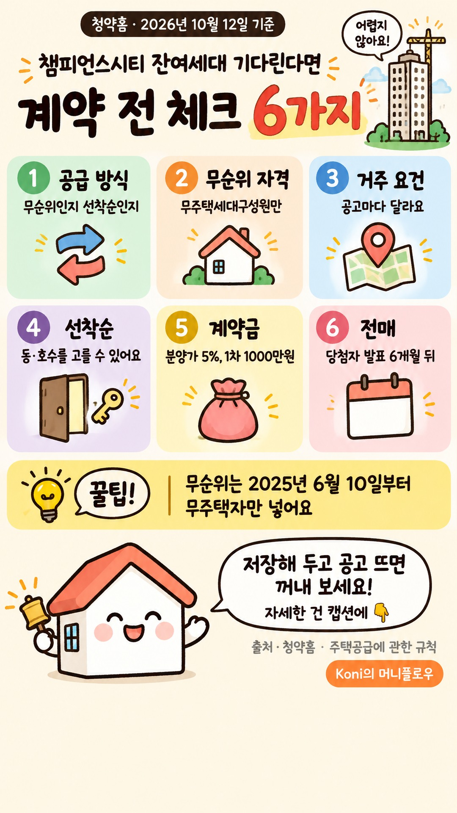

캡션 보기
챔피언스시티 미달 세대, 통장 없으면 못 넣는다고요? 통장보다 먼저 볼 게 있어요 👇 광주 챔피언스시티 1차 정당계약은 10월 9일에 끝났어요. 남은 세대는 어떤 방식으로 나오느냐에 따라 자격이 갈려요. 📌 무순위 사후접수로 나오면 · 당첨 취소·미계약 중 예비입주자가 없는 세대 · 2025년 6월 10일부터 무주택세대구성원만 · 과열 우려 시 시장·군수·구청장이 거주 요건 추가 · 추첨이라 동·호수는 고를 수 없어요 ✅ 선착순 계약으로 나오면 · 사업주체가 청약홈 밖에서 직접 받아요 · 2023년 보도 기준 청약통장·무주택 요건 없음 · 원하는 동·호수를 직접 고를 수 있어요 ⚠️ 계약 전에 볼 조건 계약금은 분양가의 5%, 1차 계약금은 1000만원이에요. 전매는 당첨자 발표 6개월 뒤부터예요. 분양가와 중도금 일정은 공고문으로 확인하세요. 💡 10월 12일 기준 청약홈 무순위·잔여세대 목록에 이 단지 공고는 아직 없어요. 분양 문의처는 1599-0199예요. → 챔피언스시티 잔여세대 기다리는 친구 태그해 주세요 후회 없는 청약·내집마련 정보 매일 받기 → @koni__0121 팔로우 #광주챔피언스시티 #챔피언스시티 #무순위청약 #선착순분양 #광주아파트분양
고정 댓글 보기 — 카드뉴스와 릴스에 붙여 넣고 고정하세요
무순위와 선착순 차이, 계약 조건은 프로필 링크 블로그에 있어요.
10월 12일 11:36
세금환급금 조회 안 하면, 5년 뒤 나라 돈 돼요
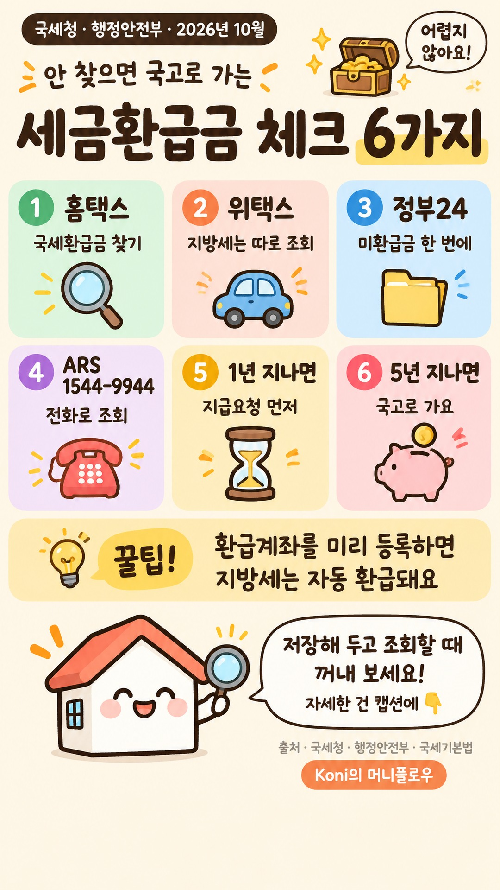

캡션 보기
세금 돌려받을 돈, 5년 지나면 어디로 가는지 아세요? 모르면 그냥 나라 돈이 돼요. 찾는 순서 정리했어요 👇 뉴스1이 9월 25일 보도한 김상훈 의원 자료로는 지난해 46억원이 시효가 지나 국고로 갔어요. 아직 주인을 못 찾은 국세환급금은 889억원이에요. 📌 어디서 조회하나요 · 국세 → 홈택스 '국세환급금 찾기' · 지방세 → 위택스 간편조회 · 한 번에 → 정부24 '미환급금 찾기' · 전화 → ARS 1544-9944 ✅ 홈택스에서 받는 순서 · 조회/발급 → 국세환급 → 국세환급금 찾기 · 주민등록번호와 이름 넣고 조회 · 환급금 상세조회 → 지급요청 · 환급계좌개설(변경)신고에 본인 계좌 입력 ⚠️ 기한 두 개 · 지급요구일부터 1년 지나면 은행·우체국에서 안 줘요 · 이때는 정부24 '세입편입 국세환급금 지급신청' · 최초 지급요구일부터 5년 지나면 국고로 가요 💡 지방세는 따로 자동차세 연납하고 차를 팔았다면 위택스를 꼭 보세요. 환급계좌를 미리 등록해 두면 자동으로 환급돼요. 국세청은 환급을 이유로 계좌 비밀번호를 묻지 않아요. 메뉴별 순서는 블로그에 더 자세히 정리했어요. 프로필 링크에서 확인하세요. → 이사 자주 다닌 친구 태그해 주세요 놓치는 지원금 없게 매일 받기 → @koni__0121 팔로우 #세금환급금조회 #미수령환급금 #국세환급금 #지방세환급금 #숨은돈찾기
10월 12일 08:31
전세자금대출계산기 전에, 은행만 바꿔도 월 이자 달라져요
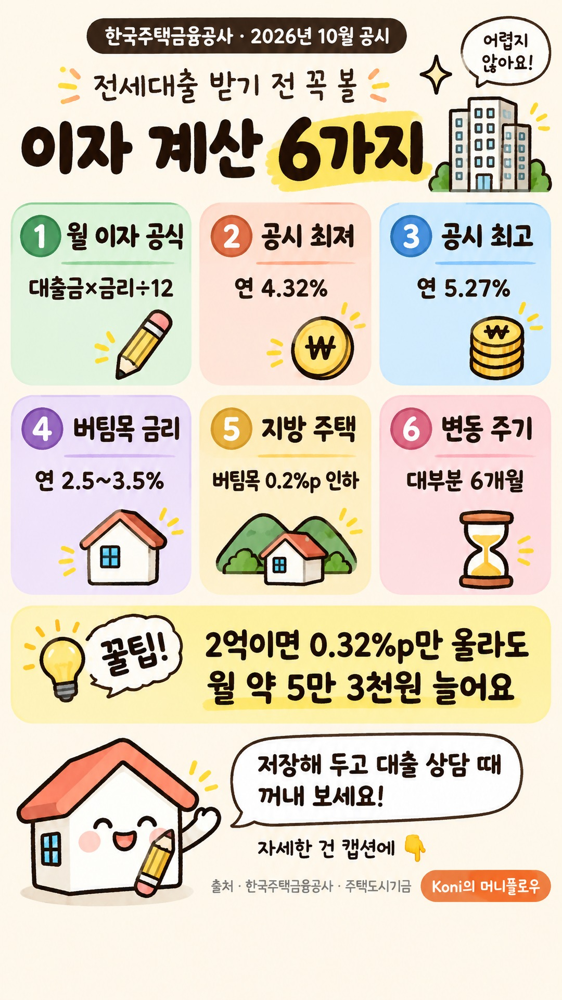

캡션 보기
전세대출 이자, 은행만 바꿔도 얼마나 달라지는지 아세요? 같은 2억인데 1년에 190만 원이 갈려요 👇 월 이자는 대출금 × 연 금리 ÷ 12예요. 이자만 내다가 만기에 원금을 갚는 방식 기준이에요. 📌 은행별 공시 금리 (2026.9.28~10.4) · 우리은행 연 4.32%로 가장 낮았어요 · 국민은행 4.4%, 신한은행 4.89% · 경남은행 5.27%로 가장 높았어요 · 그 주 보증서 담보 대출의 평균금리예요 ✅ 2억 원이면 월 이자 · 연 4.32% → 72만 원 · 연 5.27% → 약 87만 8천 원 · 한 달 약 15만 8천 원, 1년 190만 원 차이 🏠 버팀목 전세자금대출이라면 · 금리 연 2.5~3.5%, 국토교통부 고시 변동금리 · 지방 주택은 0.2%p 더 낮아요 · 1.2억 원이면 월 25만~35만 원 (가정) · 중도상환수수료는 없어요 ⚠️ 변동금리는 6개월마다 바뀌어요 5대 은행 6개월 변동형 전세대출 금리는 두 달 새 0.32%p 올랐어요. 2억이면 월 이자가 약 5만 3천 원 늘어요. 💡 계산기 숫자와 다른 이유 공시 금리는 평균값이라 내 금리는 달라요. 보증료도 따로 들어요. 은행별 금리표와 우대금리 계산은 블로그에 정리했어요. 프로필 링크에서 확인하세요. → 잔금 앞두고 대출 알아보는 친구 태그해 주세요 집·대출 정책 바뀔 때마다 받기 → @koni__0121 팔로우 #전세자금대출계산기 #전세대출 #전세대출이자 #버팀목전세자금대출 #은행대출이자계산기
10월 11일 23:20
대전 영구임대 예비입주자, 동의서 없으면 접수 막혀요
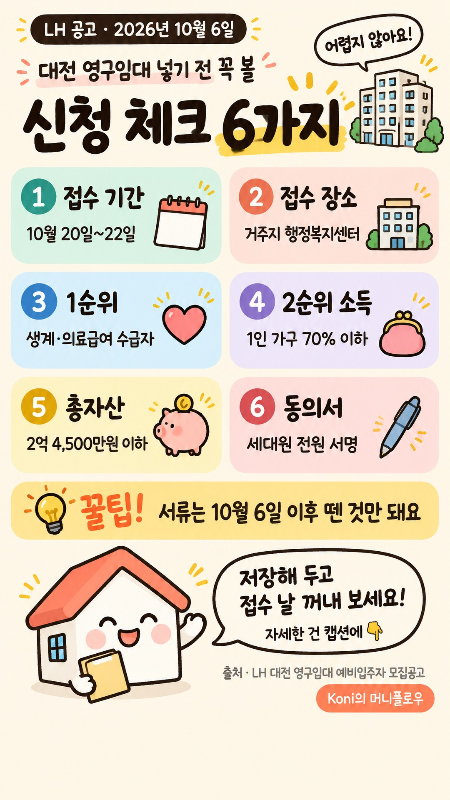

캡션 보기
영구임대 신청하러 갔다가 서류 하나 때문에 돌아온다면? 대전 접수 전에 이것부터 챙기세요 👇 LH 대전 영구임대 예비입주자 접수는 10월 20일(화)부터 22일(목)까지예요. 인터넷은 안 되고 거주지 행정복지센터에서만 받아요. 📌 누가 넣을 수 있나요 · 10월 6일 기준 대전 거주 무주택세대구성원 · 1순위: 생계·의료급여 수급자, 지원대상 한부모가족 등 · 2순위: 1인 가구 월 266만 9,354원 이하 · 총자산 2억 4,500만원, 자동차 4,542만원 이하 ✅ 꼭 챙길 서류 · 10월 6일 이후 뗀 주민등록표등본 · 세대원 전원이 서명한 개인정보·금융정보 동의서 · 확정일자 있는 지금 집 임대차계약서 사본 · 예비입주자 중복선정 불가 확인서 ⚠️ 뽑혀도 바로 입주는 아니에요 빈집이 나면 순번대로 계약해요. 이번 예비자는 기존 예비자보다 뒤 순번이에요. 💡 같은 순위면 배점으로 갈려요 가구원 수, 나이, 대전 거주기간을 봐요. 발표는 2027년 2월 26일 오후 2시예요. 배점표는 블로그에 더 자세히 정리했어요. 프로필 링크에서 확인하세요. → 대전에서 혼자 월세 사는 친구 태그해 주세요 후회 없는 청약·내집마련 정보 매일 받기 → @koni__0121 팔로우 #영구임대 #영구임대주택 #대전영구임대 #예비입주자 #주거복지
10월 11일 19:30
LH공공임대 대구연호, 소득 넘으면 접수해도 탈락해요
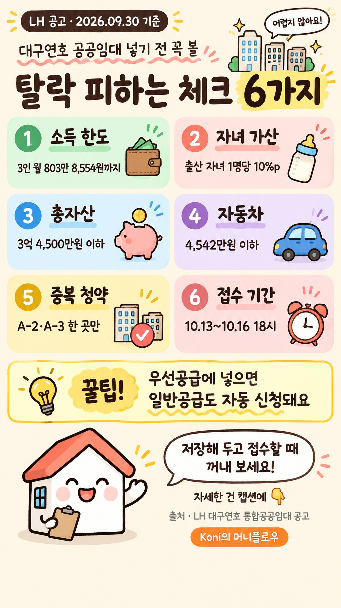

캡션 보기
대구연호 공공임대, 접수만 하면 되는 줄 아셨어요? 소득 기준을 넘으면 접수가 돼도 떨어져요 👇 인터넷 접수는 10월 13일 10시부터 16일 18시까지예요. LH청약플러스 홈페이지나 앱에서 신청해요. 📌 일반공급 소득 한도 (월, 세전 합산) · 1인 가구 → 435만 9,205원 · 2인 가구 → 671만 8,867원 · 3인 가구 → 803만 8,554원 · 4인 가구 → 974만 2,107원 ✅ 한도가 올라가는 경우 · 2023년 3월 28일 이후 낳은 자녀 1명당 10%p · 맞벌이 (예비)신혼부부는 30%p 더 ⚠️ 자산도 봐요 총자산 3억 4,500만원 이하, 자동차는 따로 4,542만원 이하예요. 세대원 전원이 금융정보 제공 동의서에 서명해야 해요. 💡 둘 다 넣으면 전부 무효 A-2블록과 A-3블록은 한 곳만 신청할 수 있어요. 공고일은 2026년 9월 30일이에요. 소득과 자산은 이날을 기준으로 봐요. 임대료와 일정은 블로그에 더 자세히 정리했어요. 프로필 링크에서 확인하세요. → 대구연호 넣으려는 친구 태그해 주세요 후회 없는 청약·내집마련 정보 매일 받기 → @koni__0121 팔로우 #LH공공임대 #통합공공임대 #대구연호 #공공임대주택 #대구임대주택
10월 11일 16:11
월급 300만원이면? 국민연금 보험료 1월 또 올라요
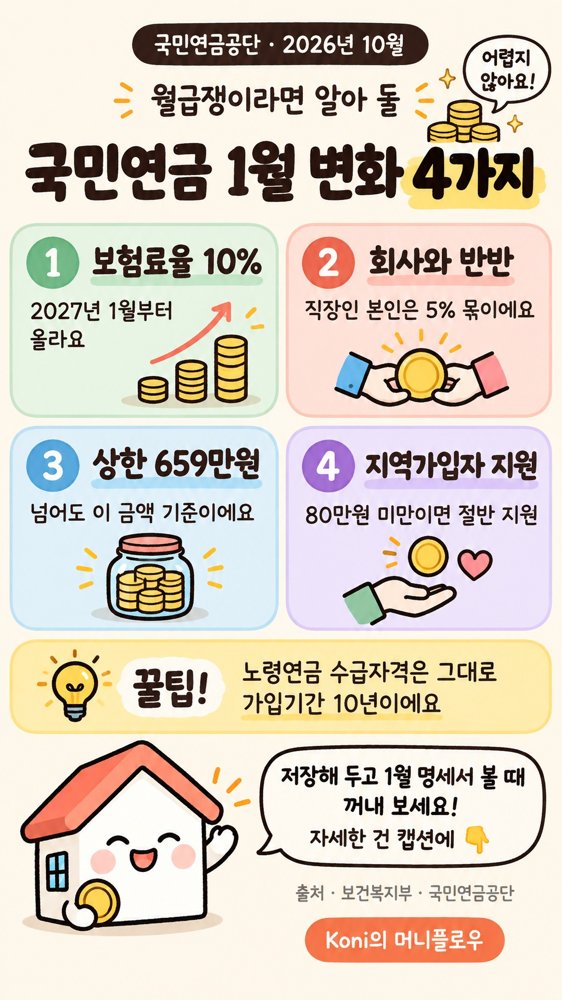

캡션 보기
1월 월급명세서, 국민연금 칸이 또 늘어 있을 거예요. 얼마나 늘었는지 계산해 봤어요 👇 2027년 1월부터 국민연금 보험료율이 9.5%에서 10%로 올라요. 2026년부터 매년 0.5%p씩, 2033년 13%까지 오르는 일정이에요. 📌 내 월급이라면 (직장인 본인 몫, 가정) · 200만원 → 월 5,000원 더 · 300만원 → 월 7,500원 더 · 400만원 → 월 10,000원 더 · 659만원 이상 → 월 16,475원 더 ✅ 계산하는 법 · 보험료 = 기준소득월액 × 보험료율 · 직장인은 회사와 반씩 나눠 내요 · 지역가입자는 혼자 전액을 내요 · 2027년 6월까지 상한 659만원, 하한 41만원 ⚠️ 지역가입자는 부담이 두 배 월 309만원 지역가입자는 2026년에 월 15,400원을 더 냈어요. 같은 소득 직장인(7,700원)의 두 배예요. 💡 지원받을 길도 있어요 기준소득월액 80만원 미만 지역가입자는 보험료 절반을 지원받아요. 2026년 기준 최대 월 37,950원, 평생 12개월까지예요. 신청은 국민연금공단 1355로 하면 돼요. 노령연금 수급자격은 그대로 가입기간 10년이에요. 월급별 계산과 지원 조건은 프로필 링크 블로그에 더 정리했어요. → 올해 첫 월급 받은 친구 태그해 주세요 놓치는 지원금 없게 매일 받기 → @koni__0121 팔로우 #노령연금수급자격 #국민연금보험료 #연금개혁 #국민연금 #직장인
10월 11일 13:36
은행 대출 여력 늘었다고요? 내 한도는 그대로예요
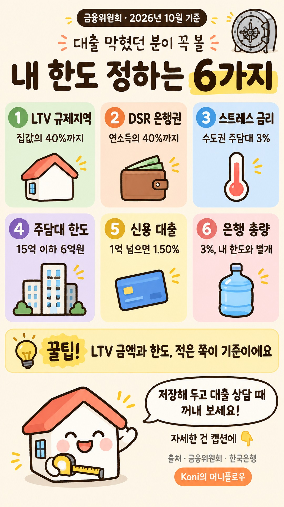

캡션 보기
은행 대출 풀렸다는데, 내 한도는 왜 그대로일까요? 늘어난 것과 그대로인 것 나눠 봤어요 👇 금융위원회가 8월 13일 가계부채 총량 목표를 1.5%에서 3% 수준으로 올렸어요. 은행 전체가 올해 더 내줄 수 있는 몫이 커진 거예요. 📌 늘어난 것 · 5대 은행 총량 4조 3,400억원 → 7조 1,319억원 · 10월 7일 기준 남은 여력 1조 1,649억원 · 신한은행 주말 접수, 케이뱅크 마이너스통장 재개 ✅ 그대로인 것 · LTV 규제지역 40%, 비규제지역 70% · DSR 은행권 40%, 2금융권 50% · 주담대 한도 15억 이하 6억원, 25억 초과 2억원 · 수도권·규제지역 주담대 스트레스 금리 3% ⚠️ 금리도 올랐어요 한국은행 기준금리는 8월 27일부터 연 3.00%예요. 9월 말 5대 은행 가계대출은 한 달 새 1조 2,852억원 줄었어요. 💡 내년 1월부터 소득이 20% 넘게 오르면 DSR 소득을 2년 평균으로 잡아요. 집값별 한도 계산은 블로그에 더 자세히 정리했어요. 프로필 링크에서 확인하세요. → 대출 막혀 이사 미룬 친구 태그해 주세요 집·대출 정책 바뀔 때마다 받기 → @koni__0121 팔로우 #대출 #가계대출 #주담대한도 #스트레스DSR #내집마련
10월 11일 11:27
10·15 대책 1년, 서울 집 계약부터 하면 큰일 나요
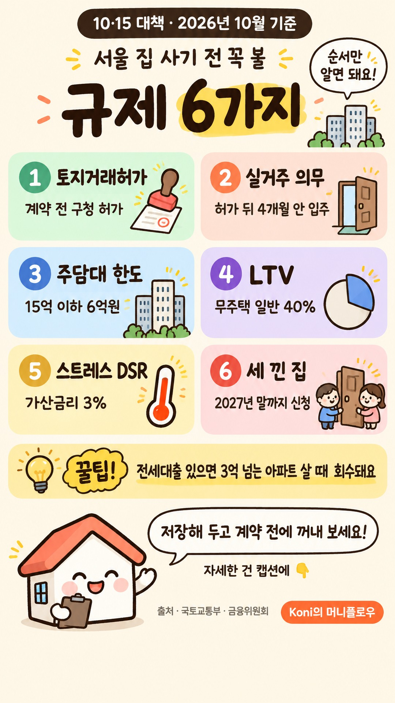

캡션 보기
서울 집, 계약서부터 쓰면 안 되는 거 아세요? 10·15 대책 1년, 순서부터 정리했어요 👇 2026년 10월 11일 기준 서울 25개 구 전체가 조정대상지역·투기과열지구·토지거래허가구역이에요. 토지거래허가구역 지정은 2026년 12월 31일까지예요. 연장 여부는 아직 정해지지 않았어요. 📌 계약 순서 · 관할 구청에 토지거래허가 신청 · 자금조달계획서 함께 제출 · 허가 뒤 4개월 안에 입주 · 입주 뒤 2년 직접 거주 ✅ 주담대 한도 (2025년 10월 16일 시행) · 시가 15억원 이하 → 6억원 · 15억 초과~25억원 → 4억원 · 25억원 초과 → 2억원 · LTV 무주택 일반 40%, 생애최초 70% · 스트레스 DSR 가산금리 3% 💡 세 낀 집도 살 수 있어요 2026년 10월 1일부터 세입자 갱신계약(1회, 최대 2년)까지 입주를 미룰 수 있어요. 5월 12일부터 계속 무주택이어야 하고 신청은 2027년 12월 31일까지예요. ⚠️ 전세대출 있는 분 전세대출이 있는 채로 3억원 넘는 아파트를 사면 등기한 날 전세대출이 회수돼요. 계약 전 체크리스트는 블로그에 더 자세히 정리했어요. 프로필 링크에서 확인하세요. → 생애 첫 집 알아보는 친구 태그해 주세요 집·대출 정책 바뀔 때마다 받기 → @koni__0121 팔로우 #1015대책 #토지거래허가구역 #토허제 #주담대한도 #내집마련
10월 11일 03:47
재건축 분담금 통지서 받았다면, 이 세 줄부터 보세요
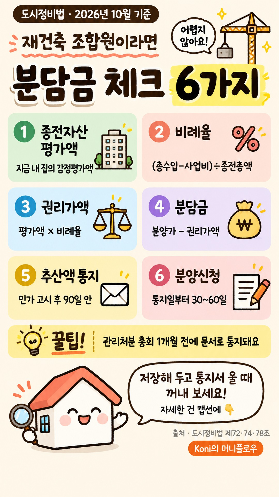

캡션 보기
재건축 분담금 통지서, 그 숫자가 어디서 나왔는지 아세요? 계산법을 알면 무엇을 물어볼지 보여요 👇 분담금은 도시정비법상 개인별로 통지돼요. 처음은 사업시행계획인가 고시 후 90일 안이에요. 분양신청 기간은 통지일부터 30일 이상 60일 이내예요. 📌 분담금 계산은 세 줄이에요 · 권리가액 = 종전자산 평가액 × 비례율 · 비례율 = (총수입 − 총사업비) ÷ 종전자산 총액 · 분담금 = 조합원 분양가 − 권리가액 권리가액이 더 크면 차액을 돌려받아요. ✅ 예시로 보면 (가정) · 평가액 10억원, 조합원 분양가 12억원인 집 · 비례율 100%면 분담금 2억원 · 90%면 3억원, 80%면 4억원 비례율 10%포인트에 1억원이 움직여요. ⚠️ 놓치면 안 되는 것 분양신청 기간에 신청하지 않으면 현금청산 대상이 돼요. 관리처분 총회 1개월 전에는 추산액이 문서로 다시 와요. 인가 신청 전 30일 이상 공람 기간에 의견을 낼 수 있어요. 💡 분담금이 크게 늘었다면 조합원 5분의 1 이상이 모이면 타당성 검증을 요청할 수 있어요. 관리처분계획인가 신청일부터 15일 안이에요. 조항별 설명은 블로그에 더 자세히 정리했어요. 프로필 링크에서 확인하세요. → 분양신청 통지서 받은 친구 태그해 주세요 후회 없는 청약·내집마련 정보 매일 받기 → @koni__0121 팔로우 #재건축분담금 #재건축 #비례율 #관리처분계획 #분양신청
10월 11일 00:49
예금 이자계산, 3%라고요? 통장엔 2.5%대만 찍혀요
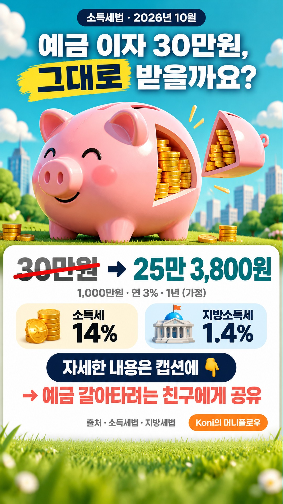

캡션 보기
예금 3%라서 이자 30만원 기다렸다면, 통장 보고 놀라실 수 있어요. 15.4%가 어디로 가는지, 계산법까지 정리했어요 👇 은행이 이자를 줄 때 세금을 먼저 떼고 줘요. 그래서 광고에 적힌 금리와 내 통장 이자가 달라요. 📌 15.4%는 이렇게 생겨요 · 이자소득세 14% (소득세법 제129조) · 지방소득세 1.4% (원천징수한 소득세의 10%) · 합쳐서 15.4%가 이자에서 먼저 빠져요 ✅ 1,000만원 · 연 3% · 1년이면 (가정한 금리) · 세전 이자 30만원 · 이자소득세 4만 2,000원 · 지방소득세 4,200원 · 세후 이자 25만 3,800원 · 계산 한 줄: 세전 이자 × 0.846 💡 단리와 복리, 2년이면 · 단리 세후 이자 50만 7,600원 · 연복리 세후 이자 51만 5,214원 · 차이는 7,614원, 기간이 길수록 커져요 ⚠️ 적금 3%는 예금 3%가 아니에요 · 월 100만원씩 12개월, 연 3% 단리면 · 세후 이자 16만 4,970원 · 1,200만원을 예금으로 넣으면 세후 30만 4,560원 · 늦게 넣은 돈은 이자가 붙는 기간이 짧아요 📌 15.4%가 달라지는 경우 · 비과세종합저축: 원금 5,000만원까지 이자에 소득세 없음 · 65세 이상은 기초연금 수급자, 장애인 등이 대상 · 2028년 12월 31일까지 가입분 · 이자·배당이 1년에 2,000만원 넘으면 금융소득종합과세 · 2,000만원은 세금 떼기 전 금액 기준 세율과 가입 요건은 바뀔 수 있으니 가입 전에 은행과 국세청 안내로 한 번 더 확인하세요. 단계별 계산은 블로그에 더 자세히 정리했어요. 프로필 링크에서 확인하세요. → 예금 갈아타려는 친구에게 공유해 주세요 #예금이자계산 #고금리예금 #이자소득세 #저축은행특판 #재테크
10월 10일 22:22
대전신용보증재단 보증, 서류 떼기 전에 이것부터 보세요
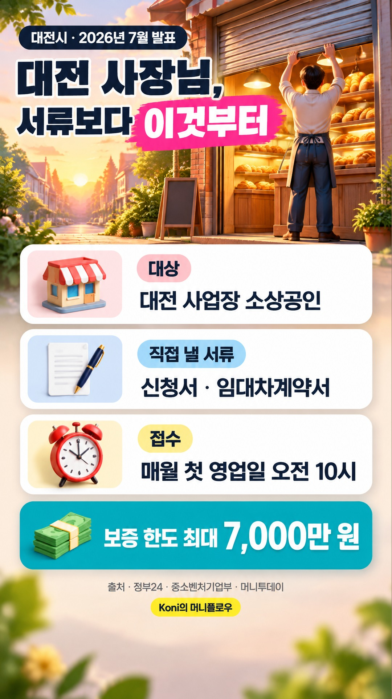

캡션 보기
대전에서 장사하는데 보증 서류부터 떼러 가셨나요? 대전신용보증재단 보증은 대전에 사업장이 있는 소상공인이 신청해요. 직접 챙길 서류는 신용보증 신청서와 임대차계약서 사본 정도예요. 하반기 일반자금은 매월 첫 영업일 오전 10시에 누리집으로 접수해요. 저장해 둘 한 줄: 다음 접수일은 11월 2일(월) 오전 10시예요. 대전에서 가게 하는 친구에게 공유해 주세요. 자세한 내용은 프로필 링크 블로그에서 확인하세요. #대전신용보증재단 #신용보증재단대출 #대전소상공인 #소상공인보증 #정책자금대출
10월 10일 17:42
청약통장 깨려는 분, 가점 날리기 전에 이 대출부터
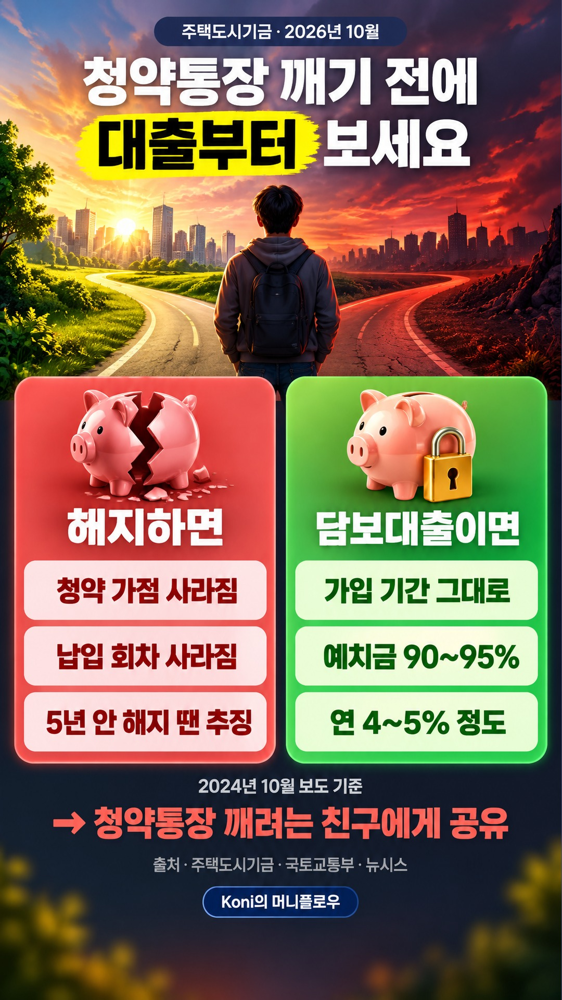

캡션 보기
청약통장 깨기 전에, 이것부터 보세요. 해지하면 가입 기간과 청약 가점이 바로 사라져요. 청약통장을 담보로 잡으면 통장은 살리고 예치금의 90~95%까지 빌릴 수 있어요(2024년 보도 기준). 저장해 둘 한 줄: 소득공제를 받아 왔다면 가입 5년 안 해지 땐 추징될 수 있어요. 자세한 내용은 프로필 링크 블로그에서 확인하세요. 청약통장 깨려는 친구에게 보내 주세요 #청약통장담보대출 #청약통장해지 #청약통장대출 #청약가점 #내집마련
10월 10일 11:51
주담대 한도 4억설, 계약금 냈다면 이것부터 확인하세요
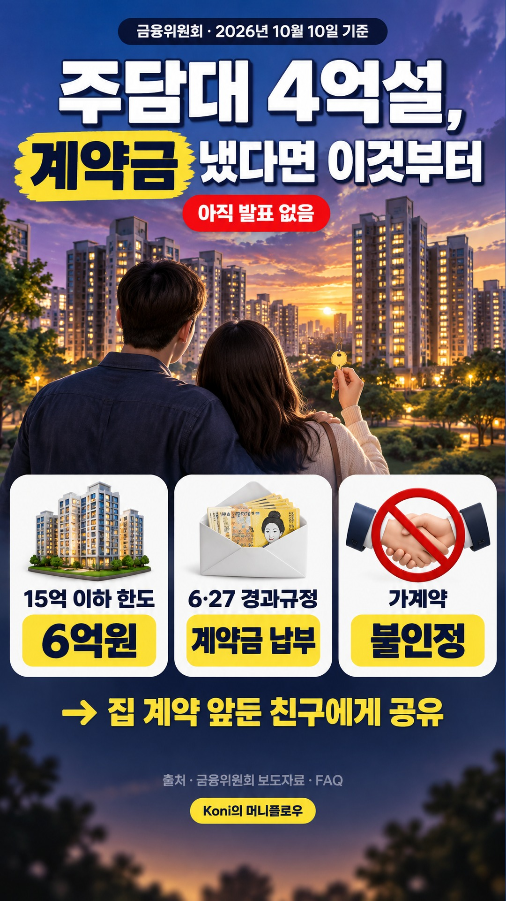

캡션 보기
주담대 한도 4억 축소설, 계약금 보낸 분이라면 놀라셨죠. 2026년 10월 10일 기준 금융위원회 발표는 없어요. 6·27 때는 시행일 전 매매계약을 맺고 계약금을 낸 경우 옛 기준이 적용됐어요. 가계약은 인정되지 않았으니 계약금 이체 내역을 꼭 챙겨 두세요. 집 계약 앞둔 친구에게 보내 주세요. 자세한 내용은 프로필 링크 블로그에서 확인하세요. #주담대한도 #주택담보대출 #대출규제 #경과규정 #내집마련
10월 10일 06:38
판판대로 처음이라면, 공고 뜨기 전에 이것부터

캡션 보기
판로지원 공고 뜨고 나서 서류 찾다가 마감 놓친 적 있나요? 판판대로는 중기부 판로지원사업을 신청하는 누리집이에요. 올해 소상공인 온라인판로 1차 모집엔 약 3주 동안 1만2천여 곳이 몰렸어요. 10월 9일 현재 보도된 올해 모집은 모두 마감됐어요. 저장해 둘 한 줄: 중소기업확인서는 중소기업현황정보시스템에서 미리 받아 두세요. 온라인 판매 시작한 친구에게 보내 주세요. 자세한 내용은 프로필 링크 블로그에서 확인하세요. #판판대로 #판로지원사업 #소상공인지원사업 #중소기업확인서 #온라인판로
10월 9일 21:30
공고문 안 보고 청약하면, 당첨돼도 취소될 수 있어요
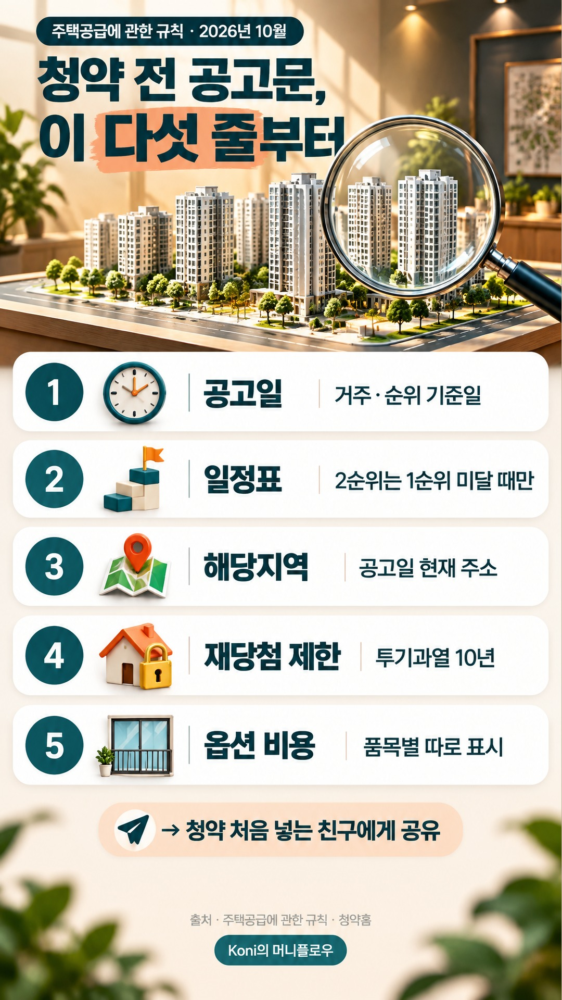

캡션 보기
공고문 안 보고 청약하면 당첨돼도 취소될 수 있어요. 해당지역은 최초 입주자모집공고일 현재 주소로 따져요. 투기과열지구 주택에 당첨되면 재당첨 제한이 10년이에요. 발코니 확장 같은 옵션 비용은 분양가와 따로 표시돼요. 공고문 볼 때 공고일·일정표·해당지역·규제·옵션 순서로 챙기세요. 자세한 내용은 프로필 링크 블로그에서 확인하세요. 청약 처음 넣는 친구에게 보내 주세요 #공고문 #아파트청약방법 #입주자모집공고 #청약홈 #내집마련
10월 9일 19:24
월세보증금대출, 청년은 월세 20만원까지 이자 0%
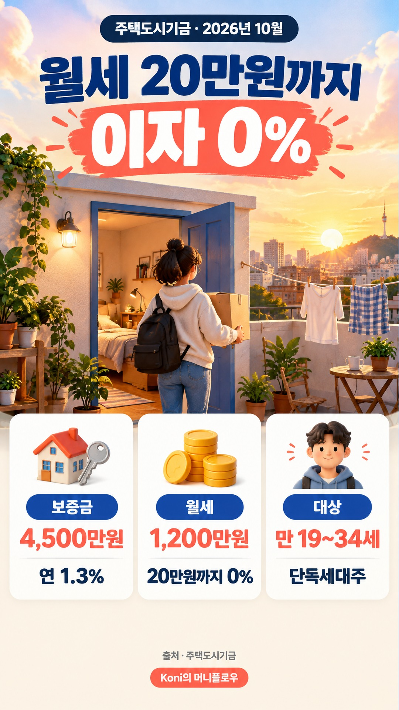

캡션 보기
월세 이자를 0%로 빌릴 수 있는 기금 상품이 있어요. 청년전용 보증부월세대출은 만 19~34세 무주택 단독세대주가 대상이에요. 월세는 20만원까지 연 0%, 보증금은 연 1.3%로 안내돼 있어요. 신청은 잔금일·전입일 중 빠른 날부터 3개월 안에 해야 해요. 자세한 내용은 프로필 링크 블로그에서 확인하세요. #월세보증금대출 #청년월세대출 #주택도시기금 #보증부월세대출 #자취방구하기
10월 9일 16:50
여성기업확인서, 대표만 여성이면 안 나와요

캡션 보기
대표가 여성이어도 여성기업확인서가 안 나올 수 있어요. 법인은 여성 대표가 최대출자자여야 해요. 신청은 공공구매종합정보망에서 하고 유효기간은 3년이에요. 법인은 주주명부와 주식 등 지분관계도를 꼭 챙기세요. 자세한 내용은 프로필 링크 블로그에서 확인하세요. #여성기업확인서 #여성기업 #공공구매종합정보망 #공공조달 #여성창업
10월 9일 14:35
옥정중앙역 디에트르Ⅱ, 당첨돼도 무주택? 세금은 달라요

캡션 보기
통장 없이 넣는 오피스텔, 당첨되면 무주택이 깨질까요? 옥정중앙역 디에트르Ⅱ는 10월 19~20일 청약홈에서 접수해요. 만 19세 이상이면 통장 없이 군별 1건, 최대 4건까지 넣을 수 있어요. 아파트 청약에선 오피스텔을 주택으로 안 보지만, 취득세에선 주거용이면 주택 수에 들어가요. 저장해 둘 한 줄: 통장이 없으면 공동인증서나 금융인증서를 미리 준비하세요. 자세한 내용은 프로필 링크 블로그에서 확인하세요. #옥정중앙역디에트르Ⅱ #오피스텔청약 #옥정신도시 #청약홈 #내집마련